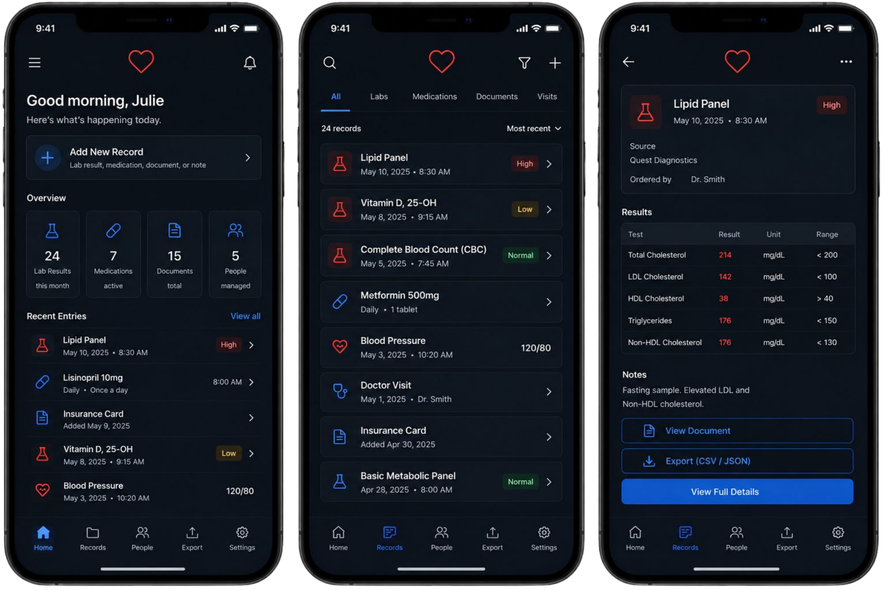

bluewire
bluewire audits is a mobile-first emf audit logger for walkthrough assessments, room-by-room readings and exportable field notes. the product turns messy in-person measurements into a structured record that can be reviewed, shared and acted on.
product

the app is designed around three core states: a home dashboard for recent audits, a detail view for room-level readings and an add-reading flow for fast onsite entry. it tracks client, location, date, reading count, device, distance, value, unit and notes.
overview
emf walkthroughs create a lot of small measurements very quickly. without a dedicated structure, readings can get scattered across notes, photos, spreadsheets and memory. bluewire organizes that field work into a repeatable audit flow.
a compact mobile dashboard for creating audits, logging room-by-room readings and exporting structured records. the system prioritizes speed during data entry and clarity when reviewing the audit later.
features
audit dashboard
recent audit cards show client, location, date and reading totals at a glance.
new audit flow
a clear entry point for starting a new emf walkthrough and building the record as you move.
reading table
device, distance, value and unit fields keep measurements consistent across rooms.
export logic
csv export gives the field data a simple path into reports, client files or analysis.